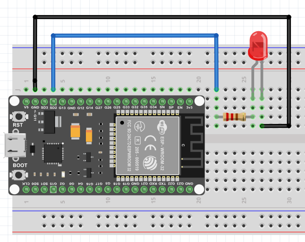

Connexion Bluetooth
Le ESP32 possède une interface Bluetooth qu'on peut utiliser pour connecter un appareil. Dans une connexion Bluetooth il y a un appareil en mode Master qui va peut se connecter à d'autres appareils en mode slave. Habituellement le ESP32 sera en mode slave.
Pour gérer la connexion nous allons utiliser la librairie BluetoothSerial.h qui est déjà installé avec Arduino IDE. L'appareil Master sera votre téléphone portable qui utilisera l'application Serial Bluetooth Terminal. Cette
Premier test de connexion
- Installez Serial Bluetooth Terminal sur votre téléphone portable.
- Branchez votre ESP32 à votre ordinateur et téléversé le code suivant
- Maintenant lancé l'application Serial Bluetooth Terminal sur votre cellulaire et dans les configurations à l'option devices choisissez votre esp32.
- Testez ensuite la connexion en envoyant au esp32 un message depuis le cellulaire et vice versa
Controler une DEL
Continuons notre exploration des possibilités que nous offre le Bluetooth en contrôlant une DEL depuis notre cellulaire.
- Faites le montage suivant :

Fonctionnement
Notre programme va permettre d'allumer la DEL en envoyant le texte del_on par le port série et de l'éteindre avec del_off.
- Copiez le code suivant dans un nouveau fichier
On donne à la fonction strncmp notre tableau de charactères reçu comme premier paramètre, le texte qu'on veut valider en deuxième et le nombre de caractère du tableau à utiliser. Pour plus d'informations sur la fonction strncmp : https://www.tutorialspoint.com/c_standard_library/c_function_strncmp.htm
- Maintenant tester votre programme en envoyant les commandes "del_on" et "del_off" au ESP32 depuis votre cellulaire.
Mediagraphie
Les exercices sont extrait et inspiré du tutoriel pour ESP32 en langage C de Freenove :
- www.freenove.com. (n.d.). C_Tutorial.pdf Page 285-322